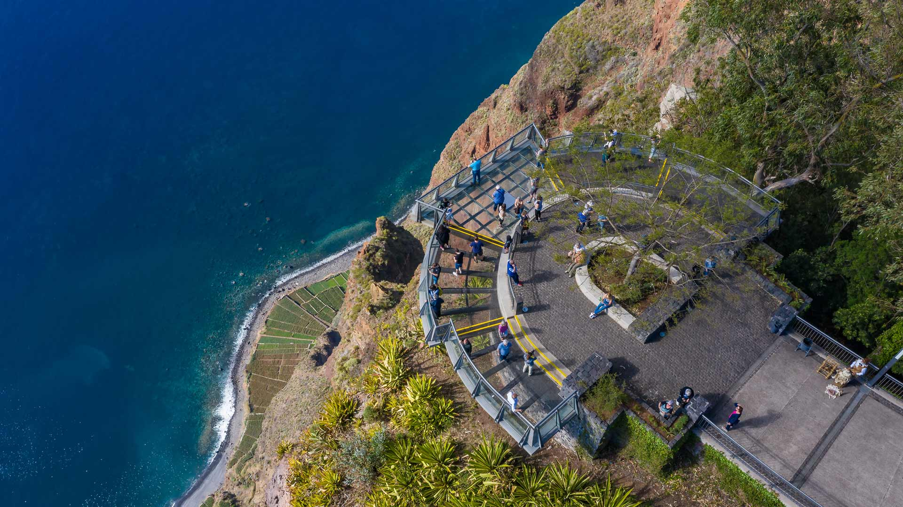

🌊
Cabo Girão (Skywalk)
Um dos cabos mais altos da Europa, com uma plataforma de vidro suspensa sobre o mar. É uma das atrações mais visitadas da Madeira, com vistas impressionantes sobre Câmara de Lobos e o Funchal.